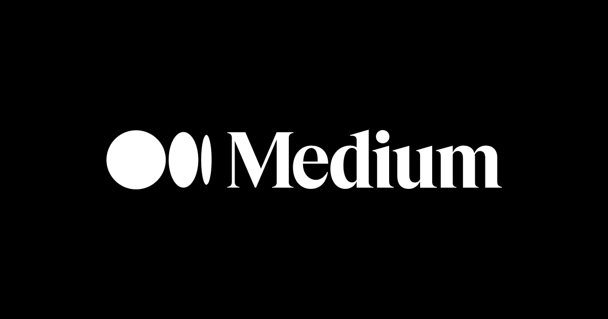
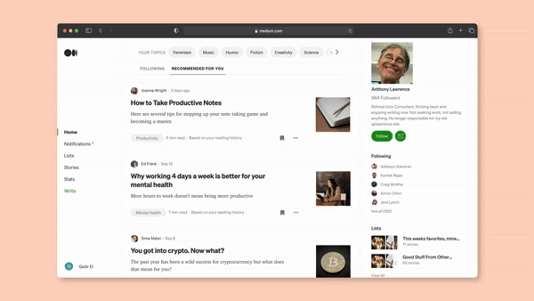
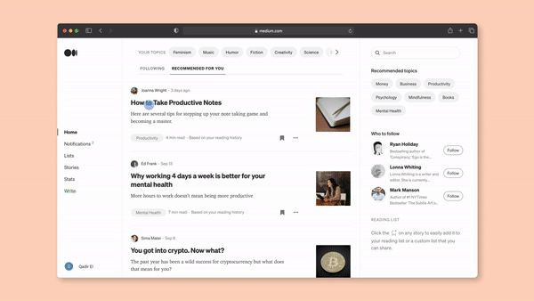
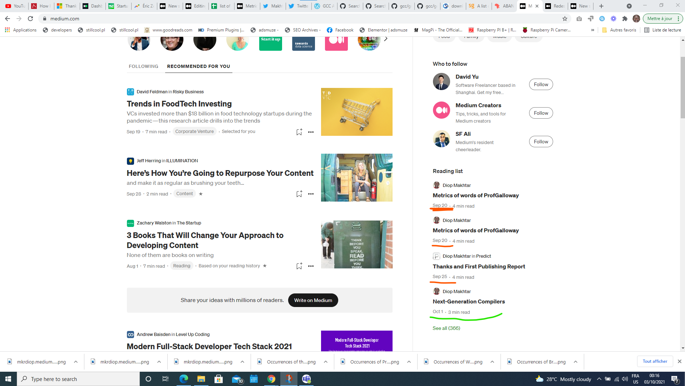
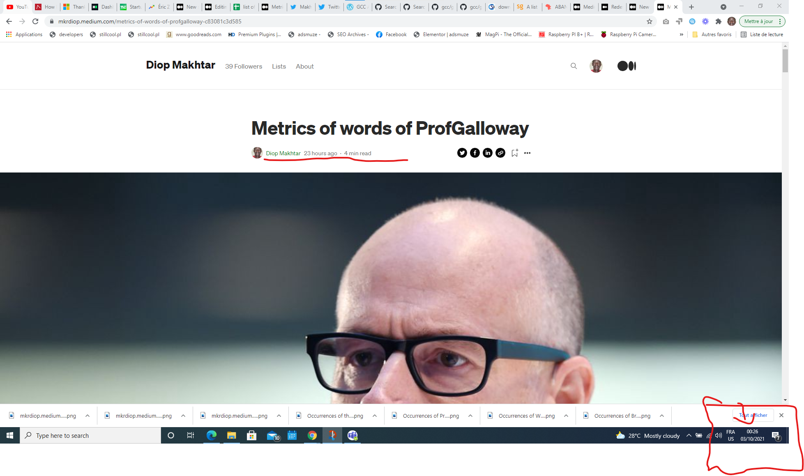

New Medium Experience and Misbehavior


I am discovering the new medium experience by reading the article about it and making my comment in this article but I won’t start with this unexpected behavior of medium publication system concerning publication date, misbehavior that I discovered at the same time as this new user experience that I think is very good at first look given this animated UX demo.
The New Navigation System
This new navigation scheme is better for people like me because it was really painful to always click on my profile photo in order to stories and write an article like this one. I was always thinking that this menu should always be here accessible to me in whatever usage situation I am be it writing or reading. I hope that this menu will be a sticky menu always accessible because ideas often come when we are reading and sometimes we would promptly stop and go write this idea in an article in editing or a new one. The misbehavior I have discovered is about editing articles and it may not concern those who only read but I will not go into this misbehavior let’s just review these new experiences that Medium’s team has shipped to us. One of the new features of this rollout is this new menu bellow

The New Reading Experience
You see that the presentation of the reading experience that now the menu will always be here in front of readers and writers. Here in this case when I am reading I could just click on stories and go working on this article I have started writing maybe days ago. But You could remark that a new article button is a very helpful button to writers like me but I see no reference to this button. Easing content creation is a factor of success for a User Content Generation platform like Medium then please add this feature to this beautiful UX that you have designed and built for us.

If it is not the first time you read me you may know how much I am advocating for connections but connections that are done with the permission of people concerned and connections with real people, not bots. I have been even highlighting more exposure for writers when I was spotting this feature for the medium mobile application that I should confess that I don't use it because using my desktop is just better for article writing and publishing. This feature for the mobile version that I was spotting is here but this new experience with this side menu for connecting and engaging with people is a really good feature that I am eager to use.
The misbehavior
Then now I could explain what I think is misbehavior of Medium’s publication system because I have said how great the job of Medium’s team is. They are smart people who do work we care about because if it was not the case I wouldn't be here writing and you reading. They are connecting us and the internet is a connection engine. As Internet’s things built for easing connections are very likely to succeed then Medium is on a good path and I wish that it will stay and stick to this successful highway. But today I have discovered that some articles that I am publishing are shown on the front page of the front end of Medium with a date that I found incorrect because this date is the date of creation of the article, not the publication date.
As an example, you have this screenshot below

I started writing Metrics of words of Scott Galloway on September 20 because just it was at that time that I had the idea of writing an article about Prof Scott galloway as the second kind of article for this publishing experiment named words and metrics. But this kind of article requires an additional charge of work for collecting data and building charts which I may finish a day after for this article I have started to be ready to publish but waiting for this chart to be built by my own I often write other articles. You can see that as I was writing this article about Scott Galloway I was also writing this report as an article for this other publishing experiment called the Greyio Heart Experiment and for this article, I had already designed the charts and creative picture but was waiting for writing the report. I hope you see how I write and wish that it could help you in your way.

But you see that when I am in front of the article that is spotted in the screenshot above as being on September 20 you could see that in the screenshot below it you see 23 hours ago from the screenshot because this time it the publication date that is is used not the creation date as in the first screenshot. Then if you, the reader, only sees the publication date it’s fine for me, and even if you want to see both of them but it is just a strange behavior that I first encounter and I think that some light should be shed on this behavior to make it clear for readers and writers like how this new medium experience that I have not still tested seems clear.
PS: I was tempted to say something about my country and the paywall but guess what I don't care because I contribute is enough for me this is not about revenues but sharing ideas and knowledge and making meaningful connections. That’s fine.